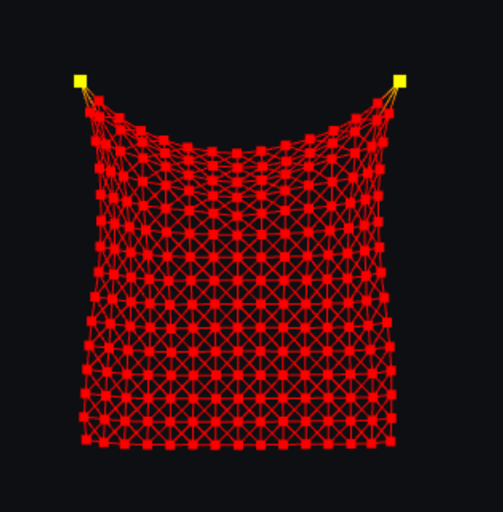

Softbody Cloth
Apr 2022
An implementation of a Spring-Mass Cloth Softbody model, with cutting and cloth pattern generation from bitmap images.

WebGL
JS
HTML
Details
This was a project for CMPUT 414 "Introduction to Multimedia Technologies" at the University of Alberta. It is a spring-mass model implementation
of a softbody cloth, using WebGL to render it. Additional features include the ability to cut the cloth using the mouse, and uploading bitmap images
to generate new cloth patterns. The pattern generation is inspired by a paper
by Wei Guo et al. about a method for generating these bitmap images.